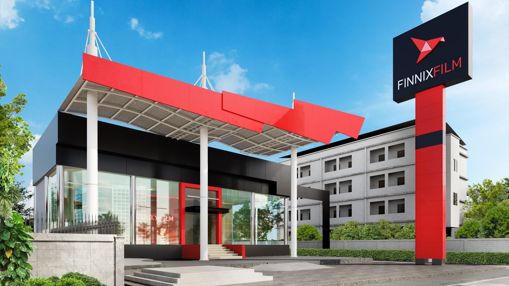

กันความร้อน ไม่ใช่แค่ทำให้มืด
ความมืดของฟิล์มคือการลดแสงที่ตามองเห็น ส่วนความร้อนเดินทางมากับคลื่นที่มองไม่เห็น เราออกแบบโดยจับที่คลื่นความร้อน ไม่ได้จับที่ความมืด
จุดเด่นของไลน์ผลิตภัณฑ์
- 01
7ปี
รับประกันทุกซีรีส์
ระยะเท่ากันทุกรุ่น ไม่ลดหลั่นตามราคา และรับประกันจากบริษัทโดยตรง
- 02
96%
ลดความร้อนสูงสุด
ค่าสูงสุดของไลน์ อยู่ที่รหัสเข้มสุดของ TITANIUM
- 03
99%
กันยูวีอย่างต่ำ
ทุกรหัสในทุกซีรีส์ผ่านเกณฑ์นี้ ไม่มีข้อยกเว้น
- 04
3ซีรีส์
ไม่มีชั้นโลหะ
สัญญาณ 5G · GPS · บัตรทางด่วน ทำงานตามปกติ
เลือกดูตามประเภทงาน
ฟินนิกซ์ทำฟิล์มกรองแสงรถยนต์เป็นหลัก และมีฟิล์มใสกันรอยเป็นไลน์รอง
ฟิล์มกรองแสงรถยนต์
ห้าซีรีส์ สิบห้ารหัสความเข้ม — ค่าลดความร้อนและช่วงความเข้มรายซีรีส์อยู่ที่หน้า ฟิล์มรถยนต์ · ตารางช่วงค่าเต็มอยู่ที่ หน้าเกี่ยวกับเรา · ค่าทั้งหมดต้องอ่านคู่กับมาตรฐานที่ใช้วัด ซึ่งยังรอ {{TEST_STANDARD}}
ดูซีรีส์ทั้งหมด →ฟิล์มใสกันรอย
ฟิล์มใสกันรอยยังไม่มีแม้แต่รหัสสินค้าในเอกสารที่เราได้รับ จึงยังไม่แสดงค่าใดทั้งสิ้น รอ {{PORTFOLIO_ITEMS_PPF}} — เขียนไว้ตรงนี้ดีกว่าเดาแทนลูกค้า
ทำไมถึงตั้งบริษัทนี้ขึ้นมา

ส่วนนี้ยังรอข้อมูลจากบริษัท เราไม่เขียนเรื่องเล่าที่มาขึ้นเองเพราะเป็นข้อความที่ลูกค้าจะใช้ตัดสินว่าจะเชื่อแบรนด์หรือไม่ ถ้าเขียนแทนแล้วไม่ตรงกับความจริง ความเสียหายมากกว่าการปล่อยว่างไว้ก่อน
สิ่งที่ต้องการคือ ปีและเหตุผลที่ก่อตั้ง · ผู้ก่อตั้งและภูมิหลัง — ส่วนแหล่งผลิตฟิล์มอยู่ที่หน้า เกี่ยวกับเรา
หาตัวแทนในจังหวัดของคุณ
เลือกจังหวัดแล้วดูตัวแทนที่ใกล้ที่สุด พร้อมเบอร์โทรและแผนที่
เรื่องที่คนเลือกฟิล์มถามบ่อยที่สุด
อีกแปดข้อพร้อมคำอธิบายเต็มอยู่ที่หน้าคำถามที่พบบ่อย
ดูทั้งหมด →ฟิล์มเข้มขึ้น แปลว่าเย็นขึ้นใช่ไหม
ควรเลือกจากอะไร ถ้าไม่ใช่ความเข้ม
กระจกหน้าติดเข้มได้แค่ไหนตามกฎหมาย
TSER กับ IR Rejection ต่างกันอย่างไร
รถของคุณจอดกลางแดด
วันละกี่ชั่วโมง?
ให้ช่างที่ผ่านการอบรมจากเราวัดกระจกและแนะนำซีรีส์ที่เหมาะกับการใช้งานจริงของคุณ
หาศูนย์ติดตั้งใกล้คุณ →